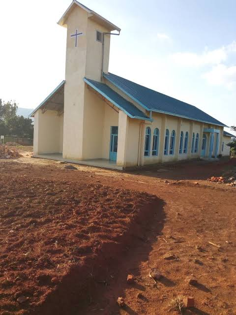

Lord's Last Call Church
Proclaiming the Gospel of Jesus Christ, growing in faith, and serving our communities with love.
Our Mission
To proclaim the Gospel of Jesus Christ and the Word of God, make disciples, nurture believers through fellowship, Bible study, prayer and the Holy Spirit, serve humanity with compassion, and extend Christ's work through evangelism, missions and church planting.
Learn MoreOur Vision
To see a worldwide, united and spiritually mature body of believers transformed into the image of Jesus Christ, living according to God's Word and prepared for His glorious return.
Learn MoreOur Core Beliefs
We are grounded in the Bible and hold to the historic Christian faith, including the Trinity, salvation through Christ, the Seventh-day Sabbath, the Holy Spirit, baptism by immersion, and more.
View Our BeliefsOur Foundation
The Bible is the inspired and authoritative Word of God, our guide for faith, practice and daily living.
Explore Our BeliefsKey Beliefs at a Glance
Our Ministries
We are a church for everyone. Get involved in a ministry that helps you grow and serve.
About Our Church
Lord's Last Call Church (Luong Mogik Mar Nyasaye) is a community of believers committed to the teachings of Jesus Christ and the authority of the Bible. We exist to worship God, grow in faith, and make a positive impact in our families, communities and the world.
Discover Our Story
Latest News & Events View All
Annual General Meeting
All members are invited to the Annual General Meeting at the main church hall.
Youth Conference
A time of fellowship, teaching and inspiration for our young people.
Community Outreach
Join us as we serve our local community with food and support.
Ready to connect with us?
Whether you are looking for a church home, prayer support, or a way to serve, we would love to meet you.
Contact Us